화공기사(구) (2015-05-31 기출문제)
1과목: 화공열역학
1. Carnot 냉동기가 -5℃의 저열원에서 10,000kcal/h의 열량을 흡수하여 20℃의 고열원에서 방출할 때 버려야할 최소 열량은?
- 7,760kcal/h
- 8,880kcal/h
- 10,932kcal/h
- 12,242kcal/h
(정답률: 70%)

2. 다성분 상평형에 대한 설명으로 옳지 않은 것은?
- 각 성분의 화학포텐셜이 모든 상에서 같다.
- 각 성분의 퓨개시티가 모든 상에서 동일하다.
- 시간에 따라 열역학적 특성이 변하지 않는 다.
- 엔트로피가 최소이다.
(정답률: 65%)
3. 다음 열역학식 중 틀린 것은? (단, H : 엔탈피, Q : 열량, P : 압력, V : 부피, G : 깁스에너지, S : 엔트로피, W : 일)
- H = Q - PV
- G = H - TS
- ΔS = ∫dQrev/T
- W = -∫PdV
(정답률: 74%)
4. 이상기체의 주울-톰슨 계수(Joule-Thomson coefficient)의 값은?
- 0
- 0.5
- 1
- ∞
(정답률: 58%)
5. 공기가 10Pa, 100m3 에서 일정압력 조건에서 냉각된 후 일정부피 하에서 가열되어 20Pa, 50m3 가 되었다. 이 공정이 가역적이라고 할때 계에 공급된 일의 양은 얼마인가?
- 100J
- 500J
- 1000J
- 2000J
(정답률: 68%)
6. 다음 중 상태함수(State function)가 아닌 것은?
- 내부에너지
- 엔트로피
- 자유에너지
- 일
(정답률: 84%)
7. 알코올 수용액의 증기와 평형을 이루고 있는 시스템(system)의 자유도는?
- 0
- 1
- 2
- 3
(정답률: 63%)
8. 깁스-두헴(Gibbs-Duhem)의 식에 대한 올바른 표현은? (단, M: 몰당 용액의 성질,
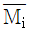
: 용액내 i성분의 부분몰 성질, xi: 몰분율)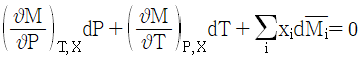
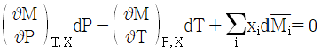
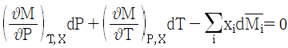
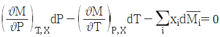
(정답률: 59%)
9. 반응 평형에 대한 설명 중 옳지 않은 것은?
- 평형상수의 계산을 위해서는 각 물질의 생성 깁스 에너지를 알아야 한다.
- 평형상수의 온도 의존성을 위해서는 각 물질의 생성 엔탈피와 열용량을 알아야 한다.
- 평형상수를 이용하면 반응의 속도를 정확히 알 수 있다.
- 평형상수를 이용하면 반응 후 최종 조성을 정확히 알 수 있다.
(정답률: 67%)
10. 비리얼 계수에 대한 다음 설명 중 옳은 것을 모두 나열한 것은?
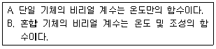
- A
- B
- A, B
- 모두 틀림
(정답률: 78%)
11. 다음은 이상기체일 때 퓨개시티(Fugacity) fi를 표시한 함수들이다. 틀린 것은? (단,
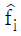
: 용액 중 성분 i 의 퓨개시티, fi: 순수성분 i 의 퓨개시티, xi: 용액의 몰분율, P : 압력)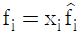
- fi=cP(c=상수)_
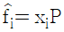
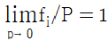
(정답률: 62%)
12. 혼합물 중 성분 i 의 화학포텐셜 μi에 관한 식으로 옳은 것은? (단, G 는 깁스 자유에너지, ni는 성분 i 의 몰수, nj는 i 번째 성분 이외의 몰수를 나타낸다.)
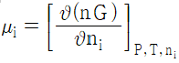
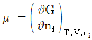
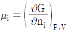
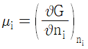
(정답률: 80%)
13. 이상기체의 단열과정에서 온도와 압력에 관계된 식이다. 옳게 나타낸 것은? (단, 열용량비
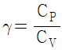
이다.)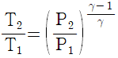
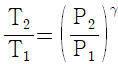
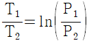
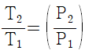
(정답률: 81%)
14. 활동도계수(Activity coefficient)를 구할 수 있는 식이 아닌 것은?
- 윌슨(Wilson)식
- 반 라르(Van Laar)식
- 레드리히-키스터(Redlich-Kister)식
- 베네딕트-웹-루빈(Benedict-Webb-Rubin)식
(정답률: 49%)
15. 기체상의 부피를 구하는데 사용되는 식과 가장 거리가 먼 것은?
- 반데르 발스 방정식(Van der Waals Equation)
- 래킷 방정식(Rackett Equation)
- 펭-로빈슨 방정식(Peng-Robinson Equation)
- 베네딕트-웹-루빈 방정식(Benedict-Webb-Rubin Equation)
(정답률: 67%)
16. 326.84℃ 와 26.84℃ 사이에서 작동하는 가역 열기관의 열효율은?
- 0.7
- 0.5
- 0.3
- 0.1
(정답률: 74%)
17. 카르노사이클(Carnot cycle)의 T-S선도는?
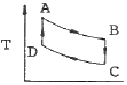
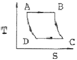
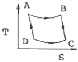
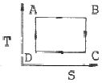
(정답률: 61%)
18. 다음의 액상에서의 과잉에너지 함수를 나타낸 것 중 국부조성 모델이 아닌 것은?
- 반 라르(Van Laar)모델
- 윌슨(Wilson)모델
- NRTL모델
- UNIQUAC모델
(정답률: 49%)
19. 고립계의 평형 조건을 나타내는 식으로 옳은 것은? (단, G : 깁스에너지, N : 몰수, H : 엔탈피, S : 엔트로피, U : 내부에너지, V : 부피)
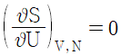
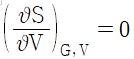
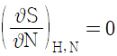
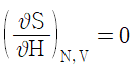
(정답률: 49%)
20. PVn=상수 인 폴리트로픽 변화(Polytropic change)에서 정용과정인 변화는? (단, n 은 정수이고,
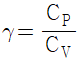
이다.)- n = 0
- n = ±∞
- n = 1
- n = γ
(정답률: 64%)
2과목: 단위조작 및 화학공업양론
21. NaCl 10%, KCl 3%, H2O 87% 의 수용액 18400kg 을 증발기(evaporator)에서 농축하여 NaCl 결정만이 석출되고 NaCl 16.8%, KCl 21.6%, H2O 61.6%의 농축액을 얻었다면 석출된 NaCl의 양은 얼마인가?
- 4700kg
- 1840kg
- 1411kg
- 1250kg
(정답률: 53%)
22. 표준상태에서 측정한 프로판가스 100m3 을 액화하였다. 액체 프로판은 몇 kg 인가?
- 196.43
- 296.43
- 396.43
- 469.43
(정답률: 60%)
23. 개천의 유량을 측정하기 위하여 dilution method를 사용하였다. 처음 개천물을 분석하였더니 Na2SO4의 농도가 180 ppm 이었다. 1시간에 걸쳐 Na2SO4 10kg 을 혼합한 후 하류에서 Na2SO4를 측정하였더니 3300ppm 이었다. 이 개천물의 유량은 약 몇 kg/h 인가?
- 3195
- 3250
- 3345
- 3395
(정답률: 37%)
24. 어떤 여름날의 일기가 낮의 온도 32℃, 상대습도 80% 대기압 738mmHg 에서 밤의 온도 20℃, 대기압 745mmHg 로 수분이 포화되어 있다. 낮의 수분 몇 % 가 밤의 이슬로 변하였는가? (단, 32℃ 와 20℃ 에서 포화수증기압은 각각 36mmHg 17.5mmHg 이다.)
- 39.3%
- 40.7%
- 51.5%
- 60.7%
(정답률: 40%)
25. 터빈을 운전하기 위해 2kg/s의 증기가 5atm, 300℃에서 50m/s로 터빈에 들어가고 300m/s 속도로 대기에 방출된다. 이 과정에서 터빈은 400kw의 축일을 하고 100KJ/s 열을 방출하였다면, 엔탈피 변화는 얼마인가? (단, work:외부에 일할시 +, heat:방출시 -)
- 212.5kw
- -387.5kw
- 412.5kw
- -587.5kw
(정답률: 29%)
26. 표준상태에서 56m3 의 용적을 가진 프로판 기체를 완전히 액화하였을 때 얻을 수 있는 액체 프로판은 몇 kg 인가?
- 28.6
- 110
- 125
- 246
(정답률: 64%)
27. 이상기체법칙이 적용된다고 가정할 때 용적이 5.5m3 인 용기에 질소 28kg 을 넣고 가열하여 압력이 10atm 이 될 때 도달하는 기체의 온도(℃)는?
- 81.51
- 176.31
- 287.31
- 397.31
(정답률: 66%)
28. 25℃에서 벤젠이 bomb 열량계 속에서 연소되어 이산화탄소와 물이 될 때 방출된 열량을 실험으로 재어보니 벤젠 1mol 당 780890cal 이었다. 25℃에서의 벤젠의 표준연소열은 약 몇 cal 인가? (단, 반응식은 다음과 같으며 이상기체로 가정한다.)
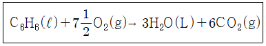
- -781778
- -781588
- -781201
- -780003
(정답률: 52%)
29. 열화학반응식을 이용하여 클로로포름의 생성열을 계산하면 약 얼마인가?
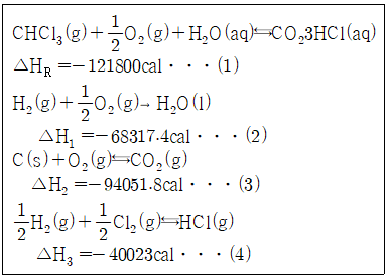
- 28108cal
- -28108cal
- 24003cal
- -24003cal
(정답률: 46%)
30. 이상기체 상수 R 의 단위를
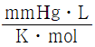
로 하였을 때 다음 중 R 값에 가장 가까운 것은?- 1.98
- 62.32
- 82
- 108
(정답률: 66%)
31. 두께 45cm 의 벽돌로 된 평판노벽을 두께 8.5cm 석면으로 보온하였다. 내면온도와 외면 온도가 각각 1000℃와 40℃ 일 때 벽돌과 석면사이의 계면온도는 몇 ℃가 되는가? (단, 벽돌노벽과 석면의 열전도도는 각각 3.0kcal/mㆍhㆍ℃, 0.1kcal/mㆍhㆍ℃이다.)
- 296℃
- 632℃
- 856℃
- 904℃
(정답률: 46%)
32. 뉴톤 유체가 관속을 흐를 때 관 중심으로부터 거리 r 만큼 떨어진 점에서 전단응력 τ는?
- r 에 비례한다.
- r 에 반비례한다.
- r2에 비례한다.
- r2에 반비례한다.
(정답률: 36%)
33. 고체내부의 수분이 건조되는 단계로 재료의 건조 특성이 단적으로 표시되는 기간은?
- 재료 예열기간
- 감율 건조기간
- 항율 건조기간
- 항율건조 제2기간
(정답률: 44%)
34. 안지름이 5cm인 관에서 레이놀즈(Reynolds) 수가 1500 일 때, 관 입구로부터 최종 속도분포가 완성되기까지의 전이길이(transition length)는 약 몇 m 인가?
- 2.75
- 3.75
- 5.75
- 6.75
(정답률: 58%)
35. 비중 0.9 인 액체의 절대압력이 3.6kgf/cm2 일 때 두(Head)로 환산하면 약 몇 m 에 해당하는가?
- 3.24
- 4
- 25
- 40
(정답률: 38%)
36. 흑체의 복사능은 절대온도의 4 승에 비례 한다는 법칙은 누구의 법칙인가?
- 키르히호프(Kirchhoff)
- 패러데이(Faraday)
- 스테판-볼츠만(Stefan-Boltzmann)
- 빈(Wien)
(정답률: 64%)
37. 액-액 추출에서 plait point(상계점)에 대한 설명 중 틀린 것은?
- 임계점(critical point)라고도 한다.
- 추출상과 추잔상에서 추질의 농도가 같아지는 점이다.
- tie line 의 길이는 0 이 된다.
- 이 점을 경계로 추제성분이 많은 쪽이 추잔상이다.
(정답률: 55%)
38. 공급원료 1몰을 원료 공급단에 넣었을 때 그 중 증류탑의 탈거부(stripping section)로 내려가는 액체의 몰수를 q 로 정의한다면, 공급원료가 과열증기일 때 q 값은?
- q ＜ 0
- 0 ＜ q ＜ 1
- q = 0
- q = 1
(정답률: 57%)
39. "분쇄에 필요한 일은 분쇄전후의 대표 입경의 비(Dp1/Dp2)에 관계되며 이 비가 일정하면 일의 양도 일정하다." 는 법칙은 무엇인가?
- Sherwood 법칙
- Rittinger 법칙
- Bond 법칙
- Kick 법칙
(정답률: 51%)
40. 40mol% 벤젠-톨루엔 혼합물을 증류하여 탑정에서 98mol% 벤젠을 얻었다. 공급액은 비 점에서 공급하며 벤젠 액조성 40mol% 일 때 기액평형상태의 증기조성은 68mol% 이다. 이때 최소환류비는 얼마인가?
- 0.76
- 0.92
- 1.07
- 1.21
(정답률: 46%)
3과목: 공정제어
41. 제어동작에 대한 다음 설명 중 틀린 것은?
- 단순한 비례동작제어는 오프셋을 일으킬 수 있다.
- 비례적분동작제어는 오프셋을 일으키지 않는다.
- 비례미분동작제어는 공정 출력을 set point에 유지시키면서 장시간에 걸쳐 계를 정상상태로 이끌어간다.
- 비례적분미분동작제어는 PD동작제어와 PI 동작 제어의 장점을 복합한 것이다.
(정답률: 57%)
42. 다음 중 cascade 제어에 관한 설명으로 옳은 것은?
- 직접 측정되지 않는 외란에 대한 대처에 효과적일 수 없다.
- Slave 루프는 master 루프에 비해 느린 동특성을 가져야 한다.
- 외란이 master 루프에 영향을 주기 전에 slave 루프가 외란을 미리 제거할 수 있다.
- Slave 루프를 재튜닝해도 master 루프를 재튜닝할 필요는 없다.
(정답률: 53%)
43. 열전대(Thermocouple)와 관계있는 효과는?
- Thomson - Peltier 효과
- Piezo - electric 효과
- Joule - Thomson 효과
- Van der waals 효과
(정답률: 51%)
44. 다음의 block diagram으로 나타낸 제어계가 안정하기 위한 최대 조건(upper bound)은?
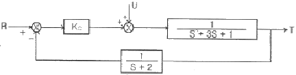
- Kc ＜ 13.7
- Kc ＜ 14.6
- Kc ＜ 10.4
- Kc ＜ 16.5
(정답률: 46%)
45. 주파수 응답을 이용한 3차계의 안정성을 판정하기 위한 이득 여유에 관한 설명으로 옳은 것은?
- 계가 안정하기 위해서는 Bode 선도 중 위상각이 -180도일 때의 진폭비가 1 보다 작아야 하므로 이득 여유는 1 에서 이 때의 진폭비를 뺀 값이 된다.
- 계가 안정하기 위해서는 Bode 선도 중 위상각이 -180도일 때의 진폭비가 1 보다 작아야 하지만 로그좌표를 사용하므로 이득 여유는 이 때의 진폭비의 역수가 된다.
- 계가 안정하기 위해서는 Bode 선도 중 위상각이 -180도일 때의 진폭비가 1 보다 커야 하므로 이득 여유는 이 때의 진폭비에서 1 을 뺀 값이 된다.
- 계가 안정하기 위해서는 Bode 선도 중 위상각이 -180도일 때의 진폭비가 1 보다 커야 하지만 로그좌표를 사용하므로 이득 여유는 이때의 진폭비가 된다.
(정답률: 44%)
46. 다음 라플라스 함수 중 최종값 정리를 적용할 수 없는 것은?
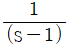
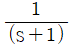
- e-3s
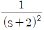
(정답률: 40%)
47. 다음 그림의 블록선도에서
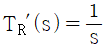
일 때, 서보(servo) 문제의 정상상태 잔류편차(offset)는 얼마인가?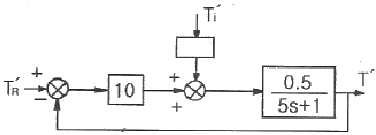
- 0.133
- 0.167
- 0.189
- 0.213
(정답률: 47%)
48. 공정의 전달함수가
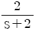
이다. 이 계에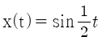
의 입력이 주어졌을 때, 위상지연(phase lag)은?- 12.⑤˚
- 14.04˚
- 15.03˚
- 17.02˚
(정답률: 45%)


49. 어떤 반응기에 원료가 정상상태에서 100L/min 의 유속으로 공급될 때 제어밸브의 최대유량을 정상상태 유량의 4배로 하고 I/P 변환기를 설정하였다면 정상상태에서 변환기에 공급된 표준 전류신호는 몇 mA 인가? (단, 제어밸브는 선형특성을 가진다.)
- 4
- 8
- 12
- 16
(정답률: 50%)
50. 탑상에서 고순도 제품을 생산하는 증류탑의 탑상 흐름의 조성을 온도로부터 추론(inferential) 제어하고자 한다. 이때 맨 위 단보다 몇 단 아래의 온도를 측정하는 경우가 있는 데 다음 중 그 이유로 가장 타당한 것은?
- 응축기의 영향으로 맨 위 단에서는 다른 단에 비하여 응축이 많이 일어나기 때문에
- 제품의 조성에 변화가 일어나도 맨 위 단의 온도 변화는 다른 단에 비하여 매우 작기 때문에
- 맨 위 단은 다른 단에 비하여 공정 유체가 넘치거나(flooding) 방울져 떨어지기(weeping) 때문에
- 운전 조건의 변화 등에 의하여 맨 위 단은 다른 단에 비하여 온도는 변동(fluctuation)이 심하기 때문에
(정답률: 52%)
51. Laplace 변환된 형태가
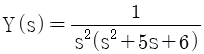
와 같은 경우, 역 Laplace 변환을 구하면?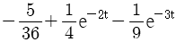
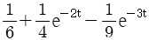
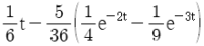
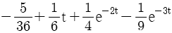
(정답률: 54%)
52. 그림과 같은 계의 총괄 전달함수는?
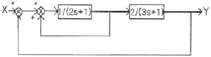
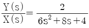
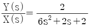
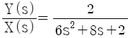
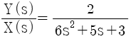
(정답률: 39%)
53. 다음 중 과소감쇠진동공정(underdamped process)의 전달함수를 나타낸 것은?
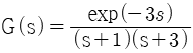
(정답률: 49%)
54. 제어기 설계를 위한 공정모델과 관련된 설명으로 틀린 것은?
- PID 제어기를 Ziegler-Nichols 방법으로 조율하기 위해서는 먼저 공정의 전달함수를 구하는 과정이 필수로 요구된다.
- 제어기 설계에 필요한 모델은 수지식으로 표현되는 물리적 원리를 이용하여 수립될 수 있다.
- 제어기 설계에 필요한 모델은 공정의 입출력 신호만을 분석하여 경험적 형태로 수립될 수 있다.
- 제어기 설계에 필요한 모델은 물리적 모델과 경험적 모델을 혼합한 형태로 수립될 수 있다.
(정답률: 36%)
55. 앞먹임 제어(feedforward control)의 특징으로 옳은 것은?
- 공정모델값과 측정값과의 차이를 제어에 이용
- 외부교란변수를 사전에 측정하여 제어에 이용
- 설정점(set point)을 모델값과 비교하여 제어에 이용
- 공정의 이득(gain)을 제어에 이용
(정답률: 66%)
56. 어떤 함수의 Laplace transform 은 이다. 이 함수를 나타내는 그래프는?
(정답률: 59%)
57. 동적계(Dynamic System)를 전달함수로서 표현하는 경우를 옳게 설명한 것은?
- 선형계의 동특성을 전달함수로 표현할 수 없다.
- 비선형계를 선형화하고 전달함수로 표현하면, 비선형 동특성을 근사할 수 있다.
- 비선형계를 선형화하고 전달함수로 표현하면, 비선형 동특성을 정확히 표현할 수 있다.
- 비선형계의 동특성을 전달함수로 표현할 수 있다.
(정답률: 57%)
58. 다음 중 공정제어의 목적과 가장 거리가 먼 것은?
- 반응기의 온도를 최대 제한값 가까이에서 운전함으로 반응속도를 올려 수익을 높인다.
- 평형반응에서 최대의 수율이 되도록 반응 온도를 조절한다.
- 안전을 고려하여 일정 압력이상이 되지 않도록 반응속도를 조절한다.
- 외부 시장 환경을 고려하여 이윤이 최대가 되도록 생산량을 조정한다.
(정답률: 61%)
59. 다음 그림과 같은 제어계의 전달함수 는?
(정답률: 51%)
60. 2차계에 대한 단위계단응답은 다음과 같다. 임계감쇠(critical damping)인 경우 응답곡선 Y(t)는? (단, 이다.)
(정답률: 42%)
4과목: 공업화학
61. 염화수소 가스를 제조하기 위해 고온, 고압에서 H2와 Cl2를 연소시키고자 한다. 다음중 폭발 방지를 위한 운전조건으로 가장 적합한 H2:Cl2의 비율은?
- 1.2 : 1
- 1 : 1
- 1 : 1.2
- 1 : 1.4
(정답률: 63%)
62. 염산을 르블랑(LeBlanc)법으로 제조하기 위하여 소금을 원료로 사용한다. 100% HCl 3000kg 을 제조하기 위한 85% 소금의 이론량은 약 얼마인가? (단, NaCl M.W = 58.5, HCl M.W = 36.5 이다.)
- 3636kg
- 4646kg
- 5657kg
- 6667kg
(정답률: 41%)
63. CuO 존재하에 염화벤젠에 NH3를 첨가하고 가압하면 생성되는 주요 물질은?
(정답률: 61%)
64. 휘발유의 안티-녹킹(anti-knocking)성의 정도를 표시하는 값은?
- 산가
- 세탄가
- 옥탄가
- API도
(정답률: 59%)
65. 다음 중 Nylon 6 제조의 주된 원료로 사용되는 것은?
- 카프로락탐
- 세바크산
- 아디프산
- 헥사메틸렌디아민
(정답률: 62%)
66. 석유 유분에서 접촉분해와 비교한 열분해반응의 특징이 아닌 것은?
- 코크스나 타르의 석출이 많다.
- 디올레핀이 비교적 많이 생성된다.
- 방향족 탄화수소가 적다.
- 분자 지방족 중 특히 C3~C6의 탄화수소가 많다.
(정답률: 39%)
67. 인광석에 인산을 작용시켜 수용성 인산분이 높은 인산비료를 얻을 수 있는데 이에 해당하는 것은?
- 토마스인비
- 침강 인산석회
- 소성인비
- 중과린산석회
(정답률: 51%)
68. 공업용수 중 칼슘이온의 농도가 20mg/L 이었다면, 이는 몇 ppm 경도에 해당하는가?
- 20
- 30
- 40
- 50
(정답률: 33%)
69. 다음 중 암모니아 산화반응시 촉매로 주로 쓰이는 것은?
- Nd - Mo
- Ra
- Pt - Rh
- Al2O3
(정답률: 67%)
70. 다음 중 천연 고무와 가장 관계가 깊은 것은?
- Propane
- Ethylene
- Isoprene
- Isobutene
(정답률: 61%)
71. 소다회 제법에서 solvay 공정의 주요 반응이 아닌 것은?
- 정제반응
- 암모니아 함수의 탄산화반응
- 암모니아 회수반응
- 가압 흡수반응
(정답률: 42%)
72. 솔베이법의 기본공정에서 사용되는 물질로 가장 거리가 먼 것은?
- CaCO3
- NH3
- HNO3
- NaCl
(정답률: 51%)
73. 염화물의 에스테르화 반응에서 Schotten -Baumann(쇼텐-바우만)법에 해당하는 것은?
(정답률: 47%)
74. 발색단만을 가지고 있는 화합물에 도입하면 색을 짙게 하는 동시에 섬유에 대하여 염착하기 쉽게 하는 원자단은?
- -OH
- -N=N-
- -N=O
(정답률: 45%)
75. 테레프탈산을 공업적으로 제조하는 방법에 해당하는 것은?
- o - 크실렌의 산화
- p - 크실렌의 산화
- 톨루엔의 산화
- 나프탈렌의 산화
(정답률: 52%)
76. 고분자의 분자량을 측정하는데 사용되는 방법으로 가장 거리가 먼 것은?
- 말단기정량법
- 삼투압법
- 광산란법
- 코킹법
(정답률: 47%)
77. 석유화학 공정에 대한 설명 중 틀린 것은?
- 비스브레이킹 공정은 열분해법의 일종이다.
- 열분해란 고온하에서 탄화수소 분자를 분해하는 방법이다.
- 접촉분해공정은 촉매를 이용하지 않고 탄화수소의 구조를 바꾸어 옥탄가를 높이는 공정이다.
- 크래킹은 비점이 높고 분자량이 큰 탄화수소를 분자량이 작은 저비점의 탄화수소로 전환하는 것이다.
(정답률: 63%)
78. 고분자의 사슬성장 중합은 벌크중합, 용액중합 등에 의해 이루어지는데, 이 중 용액중합에 대한 설명으로 가장 거리가 먼 것은?
- 반응속도가 빠르고 분자량이 크다.
- 용매의 회수 및 제거가 필요하다.
- 반응열 조절이 용이하다.
- 이온중합에 사용될 수 있다.
(정답률: 45%)
79. 다음 고분자 중 Tg(glass transition temperature)가 가장 높은 것은?
- Polycarbonate
- Polystyrene
- Poly vinyl chloride
- Polyisoprene
(정답률: 60%)
80. 연료전지에 있어서 캐소드에 공급되는 물질은?
- 산소
- 수소
- 탄화수소
- 일산화탄소
(정답률: 46%)
5과목: 반응공학
81. 다음과 같은 연속(직렬) 반응에서 A 와 R의 반응속도가 -rA=k1CA, rR=k1CA-k2일 때 회분식 반응기에서 CR/CA0를 구하면? (단, 반응은 순수한 A 만으로 시작한다.)
(정답률: 37%)
82. 의 1차 반응에서 A → R 의 반응속도상수를 k1, R → S 의 반응속도상수를 k2, R → T 의 반응속도상수를 k3라 할때 k1=10e-3500/T, k2=1012e-10500/T, k3=108e-7000/T이고, 이 반응의 조작 가능 온도는 7~77℃ 이며 A 의 공급 농도는 1mol/L 이다. 이 때 목적 생산물이 S 라면 조작온도는?
- 7℃
- 42℃
- 63℃
- 77℃
(정답률: 42%)
83. 부피가 일정한 회분식반응기에서 CH3CHO 증기를 518℃ 에서 열분해 결과, 반감기는 처음 압력이 363mmHg 일 때 410s이고, 169mmHg 일 때 880s 이었다. 이 반응의 차수는?
- 0차 반응
- 1차 반응
- 2차 반응
- 3차 반응
(정답률: 53%)
84. R 이 목적생산물인 반응 에서 각 경로에서의 활성화에너지가 E1＜E2인 경우의 반응에 대한 설명으로 옳은 것은?
- 공간시간(τ)이 상관없다면 가능한 한 최저온도에서 반응시킨다.
- 등온 반응에서 공간시간(τ) 값이 주어지면 가능한 한 최고 온도에서 반응시킨다.
- 온도 변화가 가능하다면 초기에는 낮은 온도에서, 반응이 진행됨에 따라 높은 온도에서 반응시킨다.
- 온도 변화가 가능하더라도 등온 조작이 가장 유리하다.
(정답률: 52%)
85. 다음의 반응에서 R 의 수율은 반응기의 온도조건에 따라 달라진다. R 의 수율을 높이기 위해서 반응기의 온도를 시간이 지남에 따라 처음에는 낮은 온도로부터 높은 온도까지 변화시켜야 했다. 다음 사항 중 각 경로에서 활성화 에너지(E) 관계로 옳은 것은?
- E1＞E2, E1＞E3
- E1＞E2, E1＜E3
- E1＜E2, E1＜E3
- E1＜E2, E1＞E3
(정답률: 47%)
86. 직렬로 연결된 2개의 혼합 흐름 반응기에서 액상 1차 반응이 일어날 때 주어진 전화율에 대하여 두 반응기의 체적이 최소가 되도록 하는 두 반응기의 체적비는?
- 1:1
- 1:2
- 1:3
- 1:4
(정답률: 54%)
87. 액상에서 운전되는 회분식반응기에서 시간에 따른 농도변화를 측정하여 와 t 를 도시(plot)하였을 때 직선이 되는 반응은?
- 0 차반응
- 1/2 차반응
- 1 차반응
- 2 차 반응
(정답률: 48%)
88. NO2의 분해반응은 1차 반응이고 속도상수는 694℃ 에서 0.138s-1, 812℃ 에서는 0.37s-1이다. 이 반응의 활성화 에너지는 약 몇 kcal/mol 인가?
- 17.42
- 27.42
- 37.42
- 47.42
(정답률: 50%)
89. 비가역 1차 액상반응 A → R 이 플러그흐름 반응기에서 전화율이 50% 로 반응된다. 동일조건에서 반응기의 크기만 2배로 하면 전화율은 몇 % 가 되는가?
- 67
- 70
- 75
- 100
(정답률: 55%)
90. 다음 중 일반적으로 볼 때 불균일 촉매반응으로 가장 적합한 것은?
- 대부분의 액상 반응
- 콜로이드계의 반응
- 효소반응과 미생물반응
- 암모니아 합성반응
(정답률: 47%)
91. 공간시간(space time)에 대한 설명으로 옳은 것은?
- 한 반응기 부피만큼의 반응물을 처리하는 데 필요한 시간을 말한다.
- 반응물이 단위부피의 반응기를 통과하는데 필요한 시간을 말한다.
- 단위시간에 처리할 수 있는 원료의 몰수를 말한다.
- 단위시간에 처리할 수 있는 원료의 반응기 부피의 배수를 말한다.
(정답률: 62%)
92. A → B 의 화학반응에서 생성되는 물질의 화학반응속도식 rB와 소실되는 반응물질의 화학반응속도식 -rA를 옳게 나타낸 것은?
(정답률: 50%)
93. 및 인 두 액상 반응이 동시에 등온 회분반응기에서 진행된다. 50분 후 A 의 90% 가 분해되어 생성물 비는 9.1mol R/1mol S 이다. 반응차수는 각각 1차일 때, 반응속도상수 k2는 몇 min-1인가?
- 2.4×10-6
- 2.4×10-5
- 2.4×10-4
- 2.4×10-3
(정답률: 48%)
94. 이상기체 반응물 A 가 1L/s 속도로 체적 1L 의 혼합 흐름 반응기에 공급되어 50% 가 반응된다. 반응식이 A → 3R 일 때 일정한 온도와 압력하에서 반응물 A의 평균 체류시간(mean residence time)은 몇 초 인가?
- 0.5
- 1.0
- 1.5
- 2.0
(정답률: 36%)
95. A + B → R 인 2차 반응에서 CA0와 CB0의 값이 서로 다를 때 반응속도상수 k 를 얻기 위한 방법은?
 와 t 를 도시(plot)하여 원점을 지나는 직선을 얻는다.
와 t 를 도시(plot)하여 원점을 지나는 직선을 얻는다. 와 t 를 도시(plot)하여 원점을 지나는 직선을 얻는다.
와 t 를 도시(plot)하여 원점을 지나는 직선을 얻는다. 와 t 를 도시(plot)하여 절편이
와 t 를 도시(plot)하여 절편이  인 직선을 얻는다.
인 직선을 얻는다.- 기울기가 1+(CA0-CB0)2K인 직선을 얻는다.
(정답률: 50%)
96. A → R 의 반응에서 0℃ 와 100℃ 사이에서 반응이 진행되는데 두 온도사이에서 A 와 R 의 비열이 같고 반응엔탈피 △Hr298=-18,000cal이였다면 △Hr373은 얼마인가?
- -3.375cal
- -18,000cal
- +3.375cal
- +18,000cal
(정답률: 53%)
97. 100℃, 1atm 에서 2A → R+S 을 반응시키는데 20% 의 비활성 물질을 포함하는 원료를 회분식 반응기에서 처리 할 경우, 반응물 A 는 95% 가 전환되고 이 때 소요된 시간이 5분 10초 이다. 만일 동일조성의 반응물을 100mol/h 의 속도로 플러그 흐름 반응기로 처리하여 95% 전환시키고자 할 경우 필요한 반응기 크기는 몇 L 이겠는가? (단, 이 반응은 기상반응이며 이상기체라고 가정한다.)
- 235
- 329
- 540
- 660
(정답률: 29%)
98. 회분반응기(batch reactor)의 일반적인 특성에 대한 설명으로 가장 거리가 먼 것은?
- 일반적으로 소량 생산에 적합하다.
- 단위 생산량당 인건비와 취급비가 적게 드는 장점이 있다.
- 연속조작이 용이하지 않은 공정에 사용된다.
- 하나의 장치에서 여러 종류의 제품을 생산하는데 적합하다.
(정답률: 54%)
99. 어떤 반응의 속도상수가 25℃ 에서는 3.46×10-5s-1이고, 65℃ 에서는 4.87×10-3s-1이다. 이 반응의 활성화 에너지는 약 몇 kcal 인가?
- 14.8
- 24.8
- 34.8
- 44.8
(정답률: 54%)
100. 20℃ 와 30℃에서 어떤 반응의 평형상수 K 는 각각 2×10-3, 1×10-2이다. 이 반응의 반응열 △Hr 값은 약 몇 kcal/mol 인가?
- 12.2
- 24.3
- 28.4
- 56.4
(정답률: 48%)
열량과 효율을 이용하여 버려야할 최소 열량을 구할 수 있다. Carnot 냉동기가 흡수한 열량은 10,000kcal/h이므로, 고열원에서 방출할 수 있는 최대 열량은 10,000kcal/h / 0.375 = 26,667kcal/h이다.
따라서 버려야할 최소 열량은 26,667kcal/h - 10,000kcal/h = 16,667kcal/h이다. 이 중에서 가장 가까운 값은 10,932kcal/h이므로 정답은 "10,932kcal/h"이다.